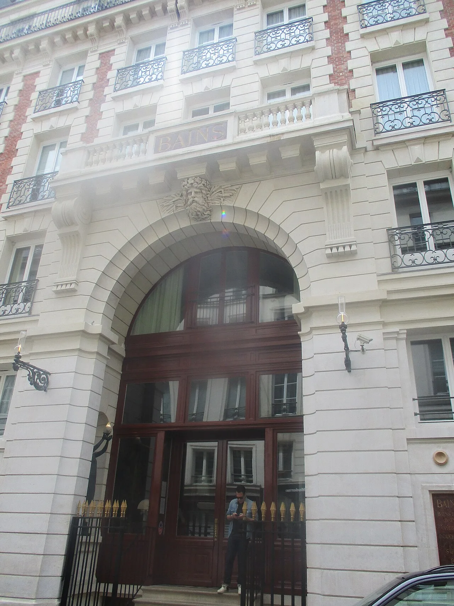
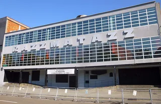
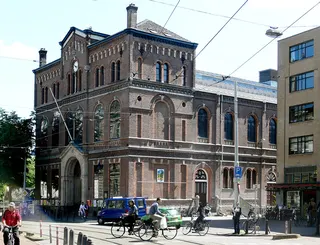
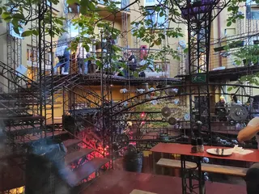

Paris clubs
The best clubs in Paris, from Le Palace to Rex Club
Two legends that closed, one room that never has: the clubs that made Paris nightlife, and the best clubs in Paris open now.
A longer memory than one club.
Paris nightlife does not have one dominant club the way Berlin has Berghain. What it has is a longer memory: two clubs from the same year, 1978, that invented the idea of the Paris nightclub as a stage, and a techno room that has quietly outlasted both of them by four decades. This guide starts with the two closed legends, because most lists of the best clubs in Paris skip straight to this year's listings and lose the reason any of it matters. It ends with the clubs open now and something to hear from each.
Before the clubs closed: Le Palace and Les Bains Douches.
Le Palace opened on 1 March 1978 in a former theatre on rue du Faubourg-Montmartre. Fabrice Emaer, who already ran Le Sept and Pimm's, stripped the seating out of the old music hall and turned it into a discotheque built for spectacle rather than just dancing: theme nights, drag performance and a stage where DJ Guy Cuevas set the tone. It was sometimes called the biggest club in Europe at the time. Emaer fell ill in 1982 and died in 1983, and the club never found the same footing afterward.

Les Bains Douches opened the same year, in December 1978, a few streets away at 7 rue du Bourg-l'Abbé. The building started in 1885 as Les Bains Guerbois, a private bathhouse. Two friends leased the fading building and hired a then-unknown designer, Philippe Starck, who built a black-and-white checkerboard dance floor into the old bath. It became the closest thing Paris had to Studio 54: David Bowie, Mick Jagger and Andy Warhol all passed through it, and a young David Guetta played some of his first sets there before he had a career outside the city. Structural problems closed the club in 2010. It reopened in 2015 as a boutique hotel that keeps the checkerboard floor as a piece of the building's own history rather than a working dance floor.
Neither club left a working room behind. What Paris kept instead was Rex Club.
Rex Club: the room that gave Paris techno a home.
Rex Club opened in 1988 in the basement of the Grand Rex cinema at 5 boulevard Poissonnière, right as acid house was reaching France from Chicago and Manchester. It had run as a disco, rock and new wave room before that, but 1988 is the year the venue's own history and the trade press both mark as the start of its life as an electronic club. It became a base for French techno and house through the 1990s and 2000s, and marked its 35th anniversary in 2023 with a photobook covering the room's own history.
Rex Club is still the clearest answer to what a Paris techno club sounds like: a low room, a sound system the venue has kept investing in over decades, and a booking policy that has stayed closer to techno and house than most of the clubs around it.
French pop and French electronic music have always sat closer together than the genre labels suggest. Mylène Farmer's Dégénération, produced with Laurent Boutonnat, is a good example: a mainstream single built on a driving electronic pulse.
The best clubs in Paris now.
Ask for the best night clubs in Paris and most current guides point to the same handful of rooms. These are the best clubs in Paris that are open now, drawn from the venues that repeat across Resident Advisor's, Time Out's and Do It In Paris's own current guides, plus Rex Club's own history above.
| Club | Area | Music and character | Best for |
|---|---|---|---|
| Rex Club | Grands Boulevards (2nd) | Techno and house since 1988, in the basement of the Grand Rex cinema | History and a sound system the venue has kept investing in |
| Badaboum | 11th arrondissement (Bastille) | Accessible bookings alongside credible underground programming | A first stop on the Bastille bar-to-club route |
| Essaim | 10th arrondissement (Canal Saint-Martin) | A single, minimalist dance floor with a strong focus on sound quality | An intimate room in the Canal Saint-Martin cluster |
| La Station - Gare des Mines | 18th arrondissement | Experimental club to techno and baile funk, in a former coal train station | Something further from the centre, tied to grassroots and queer collectives |
Opening hours, door policy and programming change too often to print here. Check each club's own listings or its Resident Advisor page for the week you are going.
Where to go: the 11th arrondissement and Canal Saint-Martin.
Paris clubbing splits into two walkable clusters rather than one strip. The 11th arrondissement, around Oberkampf, Bastille and rue Jean-Pierre Timbaud, is the main bar-hopping route before a club, with Badaboum sitting inside it. The 10th arrondissement, around Canal Saint-Martin, holds a tighter, quieter cluster, including Essaim and Point Éphémère, and is the easier of the two to cover on foot in one night. Rex Club sits apart from both, closer to the Grands Boulevards.
Hear Paris before you go.
The two closed legends left almost nothing you can hear today. What survives is the room that came after them.
Rex Club's own booking has always leaned toward French producers and the wider European techno and house circuit, which is closer to what this mix draws from than anything filed under French touch. For the clubs open now, the Selector plays a set at random from all 62,824 in the catalogue behind this site, and it is a faster way into a night than reading one more list.
Paris clubs FAQ.
What is the best nightclub in Paris?
Rex Club, in the basement of the Grand Rex cinema, is the closest thing Paris clubbing has to an institution: open since 1988, and still one of the city's clearest techno and house bookings. Badaboum, Essaim and La Station - Gare des Mines are the names that repeat most often alongside it on current guides.
What area of Paris is best for nightlife?
Two areas cover most of it. The 11th arrondissement, around Oberkampf and Bastille, is the main bar-to-club route. The 10th arrondissement, around Canal Saint-Martin, is a tighter, quieter cluster that includes Essaim.
Is Paris good for clubbing?
Yes, though it runs on fewer, older institutions than Berlin or London rather than a large current scene. Rex Club has been open since 1988, and the two clubs that shaped Paris nightlife before it, Le Palace and Les Bains Douches, both opened in 1978.
What happened to Les Bains Douches?
Les Bains Douches, the Paris nightclub inside a former 1885 bathhouse, closed in 2010 after structural problems and reopened in 2015 as a boutique hotel. Its Starck-designed checkerboard dance floor is preserved inside the hotel rather than used for club nights.
Where is Rex Club in Paris?
Rex Club is at 5 boulevard Poissonnière, in the 2nd arrondissement, in the basement of the Grand Rex cinema. It has run as an electronic club there since 1988.
Sources.
- Wikipedia: Les Bains Douches (nightclub)
- The Culture Crush: Paris' Famous Les Bains Nightclub Photographed
- Metropolis Magazine: Paris's Les Bains Is Reborn as a Boutique Hotel, 2015
- Musée Yves Saint Laurent Paris: A Look Back at the Palace Years
- Wikipedia: Le Palace
- Wikipedia: Fabrice Emaer
- Resident Advisor: The Best Clubs in Paris in 2026
- DJ Mag: Paris' Rex Club celebrates 35th anniversary with new photobook, 2023
- Time Out Paris: Paris Music & Nightlife
- Do It In Paris: The New Hotspots of Parisian Nightlife
Continue reading
Read next.
 Rave spots~10 min
Rave spots~10 minBest Clubs in Berlin: The Legends and the Ones Still Open
The rooms that made Berlin a techno city, the famous clubs that closed, and the best clubs in Berlin that are still open.
Read article →
Rave spots~6 minBest Clubs in Barcelona: From Zeleste to Razzmatazz
Razzmatazz, Nitsa and Macarena Club: how Barcelona's biggest club grew out of a 1970s live venue, and the best clubs in Barcelona open now.
Read article →
Rave spots~7 minBest Clubs in Amsterdam: From RoXY to Radion
Shelter, Radion, Lofi and the Gashouder: the best clubs in Amsterdam open now, why they run 24 hours, and the history from RoXY to De School.
Read article →
Rave spots~6 minBest Clubbing Cities in Europe: Where to Go Out
Berlin, Amsterdam, London, Ibiza, Tbilisi and seven more: the best clubbing cities in Europe, ranked by their clubs rather than bars and beaches.
Read article →